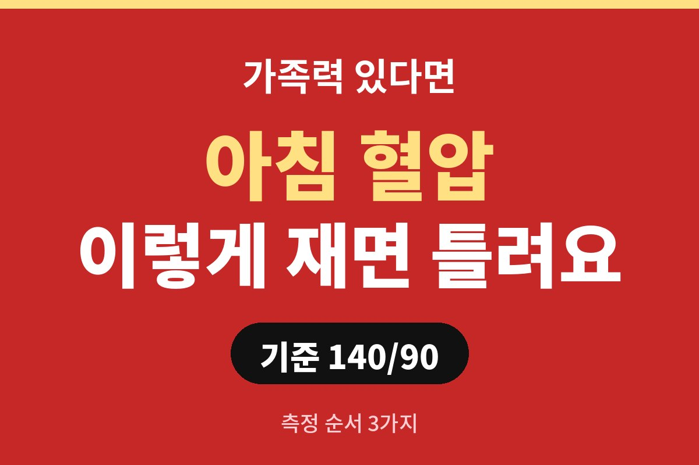
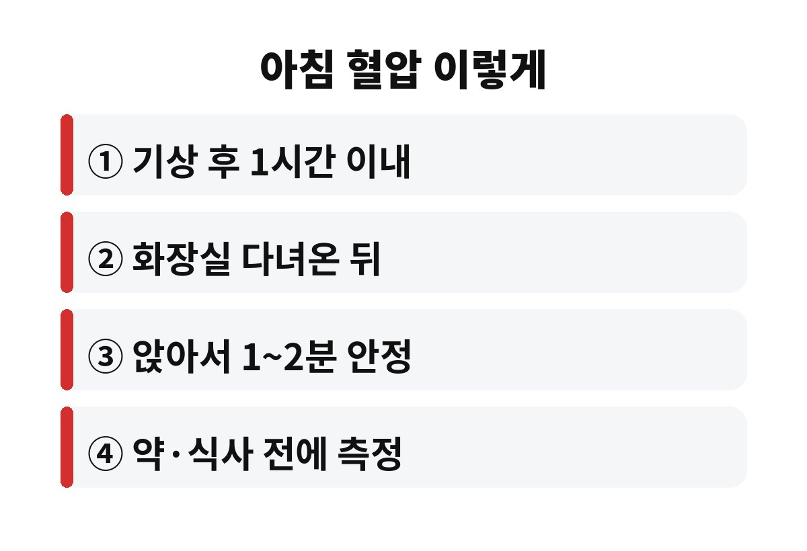

아침 혈압은 병원에서 고혈압을 판단하는 기준인 140/90을 하나의 잣대로 삼되, 집에서는 재는 순서에 따라 숫자가 확 달라질 수 있습니다. 고혈압 가족력이 있는 분이라면, 일어나자마자 침대에서 바로 재도 괜찮은 걸까요?
혈압은 하루 종일 같지 않습니다. 잠에서 깨어날 즈음에는 몸이 활동 모드로 넘어가면서 혈압이 오르는 경향이 있어요. 그래서 많은 의료진이 집에서 아침 혈압을 꾸준히 기록해 오라고 권합니다. 병원에서 한 번 잰 숫자보다 내 평소 흐름을 보여주기 때문입니다.
특히 병원에만 가면 긴장해서 수치가 올라가는 분도 있고, 반대로 병원에서는 정상인데 집에서는 높은 분도 있습니다. 집에서 재는 아침 혈압이 중요한 이유가 바로 여기에 있죠.

눈 뜨자마자 누운 채로, 혹은 허둥지둥 일어나서 재면 수치가 평소보다 들쭉날쭉할 수 있습니다. 일반적으로 권하는 순서는 이렇습니다.
① 기상 후 1시간 이내, 아침 식사나 약을 먹기 전에 재기
② 화장실을 먼저 다녀오기 (소변이 마려운 상태에서는 수치가 올라갈 수 있어요)
③ 의자에 앉아 1~2분 가만히 쉰 뒤 재기
④ 팔은 심장 높이, 등은 등받이에 기대고 다리는 꼬지 않기
커피나 담배, 운동 직후에도 수치가 올라가니 피하세요. 별것 아닌 것 같지만 이 네 가지만 지켜도 숫자의 신뢰도가 훨씬 좋아집니다.
딱 한 번 재서 높게 나왔다고 놀랄 필요는 없습니다. 한 번 잰 뒤 1~2분 쉬고 한 번 더 재서 두 값을 비교하고, 이를 며칠 이어서 기록해 평균을 보는 게 좋습니다. 같은 팔, 같은 시간대에 재는 것도 중요하고요.
기록은 수첩이나 휴대폰 메모면 충분합니다. 날짜, 시간, 수치, 그날 컨디션 정도만 적어 두세요. 병원에 가서 이 기록을 보여주면 진료실 한 번의 수치보다 훨씬 많은 정보를 의사에게 줄 수 있습니다.
| 항목 | 기억할 점 |
| 병원 기준 | 140/90 이상이면 고혈압 의심 |
| 측정 시각 | 기상 후 1시간 이내, 식사·약 복용 전 |
| 측정 자세 | 앉아서 1~2분 안정 후, 팔은 심장 높이 |
혈압계를 고를 때는 팔에 감는 커프 방식이 손목형보다 일반적으로 더 안정적이라고 알려져 있습니다. 팔 둘레에 맞는 커프를 쓰는 것도 중요해요. 너무 헐겁거나 꽉 끼면 숫자가 달라질 수 있습니다. 또 기계마다 오차가 있을 수 있어서, 병원에 갈 때 내 혈압계를 가져가 의료진의 측정값과 한 번 비교해 보면 믿고 쓸 수 있는지 확인할 수 있어요.
겨울이 다가오는 지금은 특히 신경 쓰셔야 합니다. 날이 추워지면 혈관이 수축해서 혈압이 오르기 쉬운 계절이거든요. 아침에 따뜻한 물 한 잔 마시고 이불 밖으로 천천히 나오는 습관, 화장실이나 현관의 찬 공기를 피하는 작은 배려가 부모님 건강에도 큰 차이를 만듭니다. 측정 전에 실내를 따뜻하게 해 두는 것도 잊지 마세요.
또 하나, 잰 숫자에 너무 집착하면 오히려 스트레스로 혈압이 오를 수 있습니다. 하루 이틀의 수치에 일희일비하기보다 일주일 이상의 흐름을 보는 여유가 필요해요. 숫자는 나를 겁주려는 게 아니라 내 몸 상태를 알려 주는 신호등 같은 존재라고 생각하시면 마음이 한결 편해집니다.
부모님이나 형제 중 고혈압이 있다면 나도 그럴 가능성이 상대적으로 높다고 알려져 있습니다. 그렇다고 겁먹을 일은 아니고, 오히려 일찍 챙기면 유리하다는 뜻이에요. 증상이 없어도 정기적으로 재 보는 습관이 가장 든든한 대비책입니다.
수치가 반복해서 높거나 두통, 어지러움, 가슴 답답함이 함께 있다면 집에서 혼자 판단하지 말고 병원에서 상담받으세요. 이미 혈압약을 드시는 분은 수치가 낮게 나온다고 임의로 약을 줄이거나 끊지 마시고 꼭 담당 의사와 상의하셔야 합니다.
짜게 먹는 습관, 늦은 밤 야식, 운동 부족, 수면 부족도 혈압에 영향을 줍니다. 오늘 아침부터 딱 하나만 해 본다면, 일어나서 화장실 다녀온 뒤 의자에 앉아 1~2분 쉬고 재 보는 것부터 시작해 보세요. 여러분은 평소 아침 혈압을 언제 재고 계신가요? 댓글로 알려 주시고, 도움이 되셨다면 구독해 주세요.
※ 이 글은 일반적인 건강 정보이며 진단·치료를 대신하지 않습니다. 개인 상태에 따라 전문의 상담을 권장합니다.